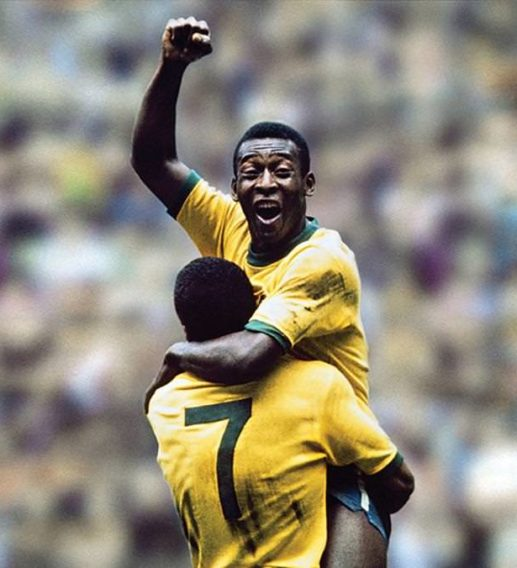
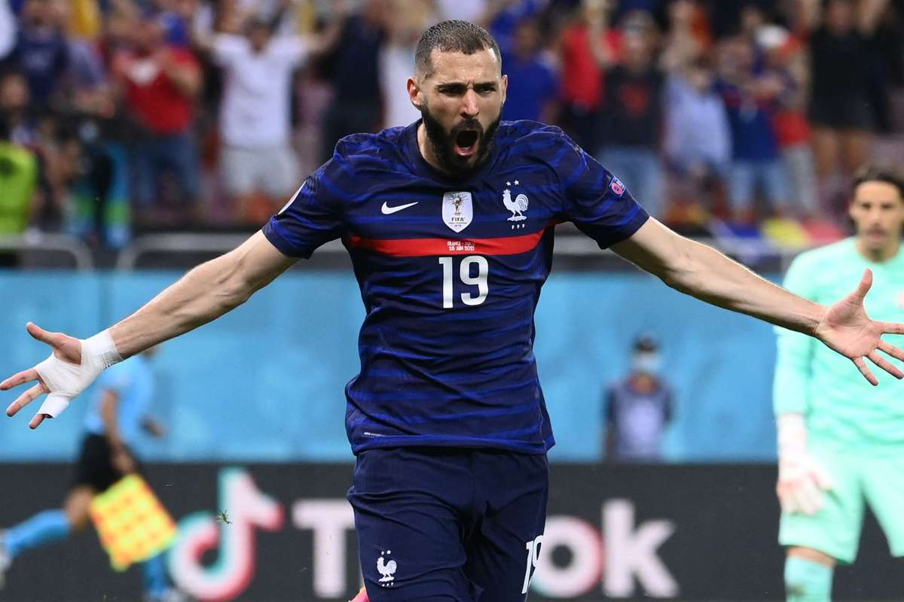
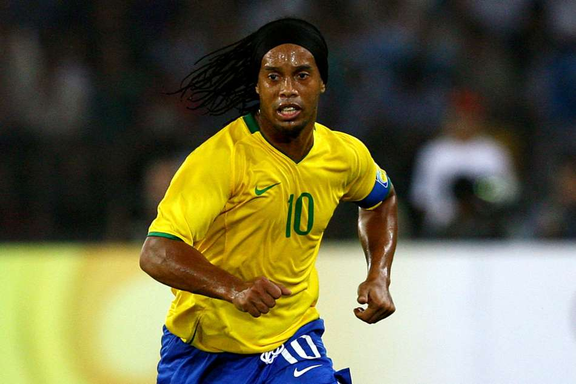
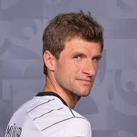

Pelé
Pelé has also been known for connecting the phrase "The Beautiful Game" with football.

Diego Maradona
During his time with the Argentina national team, Maradona scored 34 goals in 91 appearances.

Lionel Messi
Due to his short stature, Messi has a lower centre of gravity than taller players,

Neymar
Neymar primarily plays as either a central striker, second striker, winger or occasionally as an attacking midfielder.

Cristiano Ronaldo
A versatile attacker, Ronaldo is capable of playing on either wing as well as through the centre of the pitch.

Mesut Özil
Eligible to play for either Germany[22] or Turkey,[191] after long consideration.

Kylian Mbappé
Mbappé has been described by Arsène Wenger as a "huge football talent" who "has similarities to Thierry Henry".

Karim Benzema
A creative, skillful, quick, agile, and prolific forward.

Mohamed Salah
Salah is predominantly known for his speed, movement, clinical finishing, agility, dribbling skills.

Ronaldinho
Ronaldinho Gaúcho is regarded as one of the greatest and most skilful players both of his generation and of all time.

David Beckham
Throughout his career, Beckham was considered one of the best and most recognisable players of his generation.

Thomas Müller
Müller's role can be described as an attacking all-rounder,[180] a versatile player.
FIFA-International Federation of Association Football
The first president of FIFA was Robert Guérin. Guérin was replaced in 1906 by Daniel Burley Woolfall from England, by then a member of the association. The first tournament FIFA staged, the association football competition for the 1908 Olympics in London was more successful than its Olympic predecessors, despite the presence of professional footballers, contrary to the founding principles of FIFA.
Read more